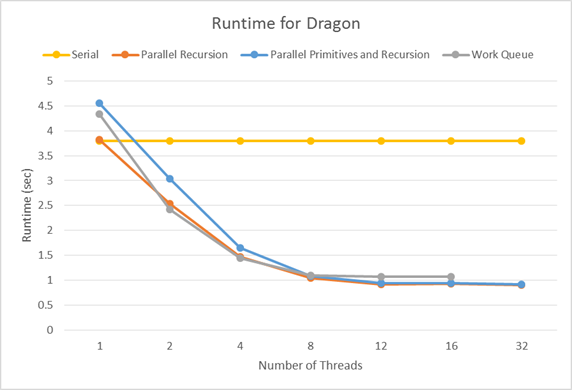
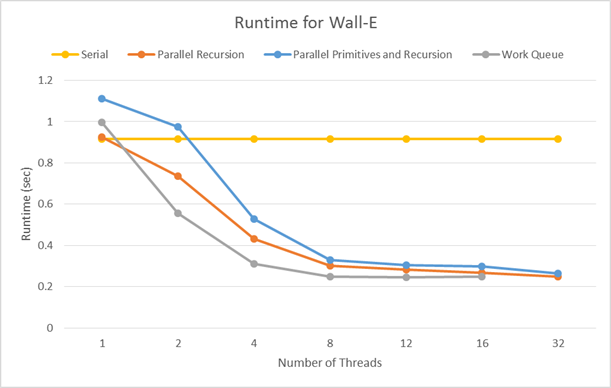

Parallel BVH Building
Aaron Perley (aperley)
Siddhant Madhuk (smadhuk)


Writeup
Summary
We investigated the performance of different approaches to parallelizing bounding volume hierarchy construction for triangle meshes using the surface area heuristic. We used OpenMP to parallelize various sections of the serial algorithm, and compared the runtimes of different implementations.
Background
Halfedge triangle meshes are used in computer graphics to represent surfaces in three dimensions. One technique used to render meshes from a particular viewpoint is raytracing, which produces very physically accurate images by simulating the paths rays of light take through a scene to the camera. Since naively intersecting a ray with a mesh with N primitives is O(N), a bounding volume hierarchy is used to reduce the cost of ray-mesh intersection to O(logN). A BVH is a tree structure in which each node knows which primitives lie inside of it, as well as the axis-aligned bounding box that contains all of its primitives.

A good BVH minimizes the amount of empty space inside of the bounding box of a node. In other words, when choosing a partitioning plane between a collection of primitives, we want to choose the plane that results in the smallest bounding boxes around the primitives on each side of it. The surface area heuristic is commonly used to do this: It assigns a cost to a particular partitioning of primitives based on the probability that a random ray entering a bounding box hits a primitive within the box. Psuedocode for a serial recursive algorithm that takes a list of primitives as input and produces a BVH using the surface area heuristic is shown below:
build_bvh(primitives):
if number of primitives is small:
return
for each axis (x, y, z):
for each possible partitioning plane between primitives:
generate the bounding boxes for the left and right
evaluate surface area heuristic (SAH)
pick the partitioning plane and axis with the best SAH
partition the primitives into left and right nodes
build_bvh(primitives in left node)
build_bvh(primitives in right node)
There are two main approaches to parallelizing this algorithm:
- Parallelize loops over primitives, since generating the bounding boxes for left and right and partitioning the primitives into the left and right nodes requires looping over all the input primitives.
- Parallelize the recursive calls to build_bvh, since they work on separate partitions of the primitives.
Approach
We started with the serial BVH building algorithm from Aaron's implementation of the 15-462 raytracer. We used OpenMP on machines with 12-core Intel Xeon CPUs running at 3.2GHz. Loops over primitives and recursive calls were parallelized using OpenMP tasks.
We developed 3 implementations to investigate the two approaches discussed above:
- Parallelize over recursive calls: Each call to build_bvh runs is run in a different thread until the maximum number of threads is reached. This results in different parts of the tree being recursively processed in parallel.
- Parallelize over recursive calls with a work queue: Like the above approach, but recursive calls are pushed onto a work queue that processed by a pool of worker threads. This prevents the work imbalance that can occur when the number of primitives on each side of the root node partition differ greatly.
- Parallelize over loops over primitives and recursive calls: Each call to build_bvh is run with a team of threads. At the two recursive calls, the team is divided in half, and each half forms the team for one of the recursive calls. The team is then used to parallelize loops over primitives in build_bvh. This required slightly changing parts of the algorithm to allow the bounding box expansions to be performed in parallel.
Results
We tested the three implementations on two different large triangle meshes and compared the wall clock runtimes to build the complete BVH.
Dragon (871,100 primitives) 
Wall-E (240,000 primitives) 
Overall, we saw pretty similar speedups between the three implementations. Since the runtime completely flattens out past 12 threads, we can conclude that algorithm is compute-bound - it spends most of its time computing max and min for expanding bounding boxes, and partitioning primitives that are in cache.Checkpoint (4/19)
-
We managed to get OpenMP working with Aaron's mesh downsampling code from
15-462. As a test, we used OpenMP to parallelize the trivially parallelizable parts
of the computation, which are just
maps over the edges and vertices in the mesh, and saw an expected speedup. - We have begun our initial parallel attempt, which attaches mutexes to every edge and vertex in the mesh and we have modified the mutable priority queue to be thread safe. The bulk of our work in the next week will be completing and polishing the thread safe halfedge mesh. We have also investigated using SIMD in addition to multithreaded parallelism, since many parts of the code look like they will work with SIMD.
- We will be presenting graphs of our speedup, as well as videos of the difference in the speedup of downsampling using serial vs. parallel implementations. The videos will allow us to compare not only the time difference, but also any changes in the quality of the downsampling.
- 4/20 - 4/24: Aaron: Finish fine-grained locking implementation of halfedge mesh. Siddhant: Modify mutable priority queue to use more fine grained locking.
- 4/25 - 4/27 Aaron: Get code working on the Xeon Phis. Siddhant: Begin working on spatial partitioning scheme.
- 4/28 - 5/1 Aaron: Investigate and implement the use of atomics for ensuring the halfedge mesh is thread safe. Aaron and Siddhant: Finish implementing spatial partioning scheme.
- 5/2 - 5/5 Aaron: Implement the system using CUDA, if feasible. Siddhant: Tweak data structures and algorithms to take advantage of spatial partitioning scheme.
- 5/6 - 5/9 Aaron and Siddhant: Write up results, prepare graphs and videos.
Summary
We are going to investigate the performance of different implementations of mesh downsampling via quadratic error simplification on multicore CPUs. We will focus on ways to efficiently collapse edges in parallel, while minimizing synchronization necessary to maintain the correctness of the data structure, and producting a high quality downsampling.
Background
Halfedge triangle meshes are used in computer graphics to represent surfaces in three dimensions. When a mesh has more vertices and edges than are necessary to effectively model a shape, downsampling can be used to collapse unnecessary edges. Although it is not possible to determine a completely optimized edge collapse order, the quadric error metric developed by Michael Garland and Paul Heckbert provides a heuristic to determine good edge collapse candidates. The basic algorithm computes a quadric error score for each edge and then uses a priority queue to iteratively collapse the edges with the best score. After each edge is collapsed, other edges may also be removed and the heuristic score for some edges may need to be updated. This introduces many opportunities for parallelism. Trivially, we can parallelize the computation of the quadric error scores for each edge. In addition, we will also collapse edges and update quadric error scores in parallel. This will require synchronization between threads to maintain correctness and provides an opportunity to test different work partitioning schemes.
The Challenge
This problem is challenging since removing edges in a halfedge mesh in parallel requires synchronization so that a thread is not trying to traverse or remove edges that another thread has removed or edited. We will investigate the performance of different synchronization techniques including coarse-grained locks on the entire data structure, fine-grained locks on individual mesh elements, transactional memory operations, as well as lock free solutions that ensure that conflicting updates never occur. We will also investiage different work and spacial partitioning schemes, to ensure that synchronization between threads is relatively infrequent. Finally, traversing the halfedge data structure can have very incoherent memory access.
Resources
The starter code that we will be working with will be from assignment 2 from 15-462, MeshEdit. The code contains a serial solution to the probelem that we are trying to tackle and we will be using it as a reference while writing our parallel code. We will start by working on the six-core Xeon e5 in the lateday cluster initially and also the Xeon Phi to see which gives us better performance. We will be looking at the difference in performance obtained when we use different methods of synchronizations across the two machines and as we use different implementations for our code. Then we will investigate the performance of our code when it has been ported to the CUDA language so it can work on NVIDIA GPUs.
Goals and Deliverables
Our goals for the project are:
- Implement a working serial version, since our starter code still has a few glitches that we need to resolve.
- Implement a naive parallel version by basically locking all the edges in our mesh whenever an operation is being performed on them.
- Investigate the effects of using different parallel approaches, such as transactional memory, coarse grained locks and fine grained locks on mesh elements.
- Investigate the possibility of using different data structures to implement out mesh. Currently we are building half edges out of a given input which leads to a problem where edges that are close to each other on the mesh are actually at very different memory addresses, leading to incoherency issues. We will try and find a way to avoid this issue.
- Our first implementation will be designed to work on the lateday CPUs, we will also see the difference in the speedup achieved on the six core Xeon e5 and the fifty core Xeon Phi based on different approaches.
- The next step will be to port the code to work on GPUs in the Gates clusters and investigate the performance of our code on these machines.
Platform Choice
Our problem ends up being IO-bound rather than bound computationally. Since problems that are bound by IO are usually better suited for CPU tasks, we will be implementing our code on the latedays cluster first. We will then later check the performance of our code on the GPUs of the Gates, but this will be a secondary objective in nature.
Schedule
- Friday, April 8: Finish getting correct serial version working on Latedays. Finish simple parallel version with a lock on the entire data structure.
- Friday, April 15: Finish fine-grained locking version and comparisons to serial version running on Xeon e5-2620s and Xeon Phis.
- Friday, April 22: Finish implementation of spatial partitioning scheme and comparisons to other versions. Also test tweaks to the data structure to improve memory accesses.
- Friday, April 29: Port code to CUDA and test on the Gates 5000 machines.
- Friday, May 6: Prepare visualisations of results and demo.